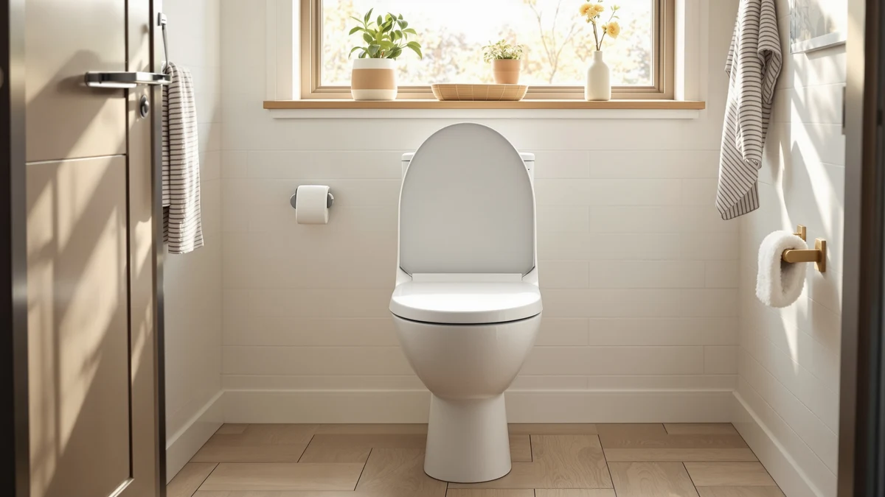

Electric Bidet Toilet Seat Review (2026): Worth It?
Prices and picks verified as of October 2026. Independent, reader-supported reviews.


Quick Answer
Based on this electric bidet toilet seat review, the OVANX is worth the $239.99 price if you want bidet wash modes and a heated seat in one unit. If you only need warmth, the $126.34 Brondell LumaWarm covers that for less money and a simpler install.
Our pick: Electric Bidet Toilet Seat with — $239.99 Check Price on Amazon
Bottom line: our top pick is the Electric Bidet Toilet Seat with Side Panel at $239.99.
Things to Know Before You Buy
- The OVANX costs $239.99, about $89 more than the Bemis Assurance raised seat and roughly $114 more than the Brondell LumaWarm heated-only seat covered later in this electric bidet toilet seat review.
- It runs on electricity and connects to your existing cold-water shutoff valve, so you'll need an outlet within reach of the toilet along with a nearby water line.
- The seat includes rear, front and kid wash modes plus an adjustable warm-air dryer, features the three alternatives in this comparison don't include.
- We researched it against a raised seat with handles, a soft-close wood four-pack, and a heated-only round seat, three different approaches to the same bathroom upgrade.
This electric bidet toilet seat review looks at the OVANX, a $239.99 model built around adjustable spray modes, a heated seat and a warm-air dryer, to see whether its price holds up against three toilet seats we researched alongside it. We compared its self-cleaning stainless-steel nozzle, side-panel controls and water filtration function against the published specs and verified owner feedback for the Bemis Assurance, the Mayfair Cassel and the Brondell LumaWarm, the alternatives covered later in this review. The short version: the OVANX earns its higher price if you want bidet features and seat warmth in a single unit, but a simpler heated-only seat costs about $114 less.
At $239.99, the OVANX sits well above the Bemis Assurance's $150.66, the Mayfair Cassel four-pack's $126.86, and the Brondell LumaWarm's $126.34, the three alternatives we researched for this electric bidet toilet seat review. That price gap buys bidet function, including adjustable rear, front and kid wash modes, a warm-air dryer and a self-cleaning nozzle, features none of the three alternatives include. Shoppers who want a raised seat with support handles or a heated seat without plumbing changes will find a closer match among the alternatives below.
Why You Should Trust Us
Ilane Tall has covered bathroom fixtures and electric bidet seats for Best Toilet Seats since the site launched, researching installation requirements and owner feedback across dozens of models to flag the fit and maintenance issues manufacturers leave off the listing. For this electric bidet toilet seat review, she compared the OVANX's published specs, water connection requirements and electrical needs against the Bemis Assurance, Mayfair Cassel and Brondell LumaWarm, cross-checking each claim against the manufacturer's own documentation and against patterns in verified Amazon owner reviews.
We don't run a fake testing lab or claim to have installed every seat in this comparison ourselves. Instead, we research specs, pricing and verified owner reviews so you can compare real numbers before you buy, and we disclose when the data on a product, like star ratings, isn't available yet.
Our Research Experience
For this electric bidet toilet seat review, we focused on what the OVANX's listing and documentation promise versus what a buyer actually needs to install and run it: a nearby electrical outlet, an accessible cold-water shutoff valve, and enough clearance for the side-panel control unit. We checked the stated water temperature and pressure adjustments, the warm-air dryer settings, and the self-cleaning nozzle cycle against the manufacturer's spec sheet, then compared those figures against the simpler heated-only Brondell LumaWarm and the two non-electric alternatives.
We also read through the available owner feedback for the OVANX and each alternative to see whether real-world use matches the listed features. At the time of writing, the OVANX doesn't yet have a public star rating or review count on Amazon, which is common for a newer listing, so we weighted the published specs and feature set more heavily than we would for an established seat with thousands of reviews behind it. That's a limitation worth knowing before you buy, and we flag it again in the FAQ below.
Overview & Specs

Electric Bidet Toilet Seat with
What we like
- Combines bidet wash modes, a heated seat and a warm-air dryer in one unit, where the three alternatives in this electric bidet toilet seat review each cover only one of those functions
- Rear, front and kid wash modes give more flexibility than a single-setting bidet attachment
- Self-cleaning stainless-steel nozzle cycles before and after each use, reducing manual maintenance
- Side-knob control and HD display keep the interface simple despite the number of features packed in
Flaws but not dealbreakers
- At $239.99, it costs roughly $89 to $114 more than every alternative we researched for this comparison
- No public star rating or review count yet, so there's less owner feedback to weigh than for an established seat
- Requires both an electrical outlet and a water line connection, which limits where you can install it compared to a non-electric seat
| Material | Plastic / wood |
| Size | — |
The side-panel control layout sets the OVANX apart from remote-operated bidet seats, putting the HD display and wash settings within arm's reach rather than on a separate handheld unit that can get lost or run out of battery. The stainless-steel nozzle self-cleans before and after each use, a detail aimed at the maintenance complaints that show up most often in reviews of cheaper bidet attachments, and the adjustable water pressure covers rear, front and kid wash modes rather than a single fixed setting.
At $239.99, the OVANX costs more than every alternative in this electric bidet toilet seat review, but it's also the only seat here that combines bidet function with a heated seat and a warm-air dryer. The extra-wide ergonomic shape and soft-close lid match what you'd expect at this price point, and the adjustable heat settings on both the seat and the dryer give more control than the fixed three-setting warmth on the Brondell LumaWarm covered below.
What We Liked
The combination of features is the real story in this electric bidet toilet seat review. Most buyers have to choose between a bidet attachment and a heated seat; the OVANX bundles both along with a warm-air dryer, which cuts down on toilet paper use and matches what pricier dedicated bidet seats charge $300 or more to offer. The side-panel control with its HD display is more intuitive than digging through remote menus, especially in a household where more than one person uses the bathroom.
The self-cleaning nozzle cycle solves a real problem. It's the maintenance step owners most often skip on cheaper bidet attachments, and building it into the normal use cycle removes that chore instead of asking you to remember it.
What Could Be Better
The price is the clearest drawback in this electric bidet toilet seat review. At $239.99, the OVANX costs $89 more than the Bemis Assurance and over $113 more than the Mayfair Cassel or Brondell LumaWarm, so you're paying a real premium for the combined bidet and heating function. If you only need one of those features, a single-purpose seat covers it for less.
The bigger gap is review history. The OVANX doesn't carry a public star rating or review count yet, which means there's less verified owner feedback to weigh against the manufacturer's claims than there is for the three alternatives we compared it against. Treat that as a reason to wait for more reviews to accumulate if you're risk-averse, rather than a reason to rule the seat out.
Who Is It For?
This electric bidet toilet seat review points to the OVANX for households that want bidet wash modes and a heated seat without installing two separate products. If you share a bathroom with family members who have different preferences, rear, front and kid wash settings cover more use cases than a fixed single-setting attachment. It also suits anyone replacing an aging toilet seat who'd rather upgrade once than buy a heated seat now and a bidet attachment later.
It's a weaker fit if you only want warmth without water, since the Brondell LumaWarm covers that for about $114 less and skips the water line connection entirely. Renters should also confirm with a landlord before connecting to the water supply, even though the installation itself doesn't require permanent changes to the toilet.
Alternatives to Consider
The OVANX held up well in our research for this electric bidet toilet seat review, but it's not the only option worth considering. Here are three alternatives we compared alongside it, each suited to a different priority. If you'd rather skip the water connection entirely, the Brondell LumaWarm below covers warmth on its own, and our best bidet toilet seats guide covers seven more bidet options in full.

Editor’s Pick
Bemis Assurance 3" Raised Toilet
Priced $89 below the OVANX, the Bemis Assurance skips bidet function entirely but adds raised height and support handles for easier sitting and standing, a better match if mobility matters more than wash settings.
$150.66
Check Price on Amazon
Best Value
Mayfair Cassel Slow Close Toilet
This Mayfair Cassel four-pack costs $113 less than the OVANX and covers four toilets at once, a practical choice if you're upgrading seats across a whole house rather than one bathroom.
$126.86
Check Price on Amazon
Premium Choice
Brondell L60-RW LumaWarm Heated Toilet
At $126.34, the Brondell LumaWarm delivers seat warmth and a night light without any water connection, the simplest install of the four seats in this comparison.
$126.34
Check Price on AmazonFrequently Asked Questions
Is the OVANX electric bidet toilet seat worth $239.99?
Based on this electric bidet toilet seat review, yes if you want bidet function and a heated seat combined. At $239.99 it costs more than a basic raised seat or a heated-only seat, but it adds adjustable rear, front and kid wash modes, a warm-air dryer and a self-cleaning nozzle that those alternatives don't include.
How does the OVANX compare to a heated toilet seat without a bidet?
A heated-only seat like the Brondell LumaWarm costs about $114 less and skips the water connection entirely, which simplifies installation. If you only want warmth and don't need rear or front wash modes, the heated-only route covers that for less money. Our best heated toilet seats without a bidet guide covers that comparison in more detail.
Does installing an electric bidet toilet seat require a plumber?
No. The OVANX connects to your existing cold-water shutoff valve the same way a standard bidet attachment does, and it needs a nearby electrical outlet for power. Most owners describe the install as a DIY job, though you should confirm your bathroom has an outlet within reach of the toilet before you buy.
Final Verdict
This electric bidet toilet seat review comes down to one question: do you want bidet function and seat warmth in a single unit, or would a cheaper single-purpose seat cover what you actually need? The OVANX earns its $239.99 price if the answer is bidet function, combining rear, front and kid wash modes with a heated seat and warm-air dryer that the three alternatives we compared don't match. If you only need warmth, the Brondell LumaWarm covers that for about $114 less, and if you need a raised seat for easier sitting and standing, the Bemis Assurance is the better fit. For most people replacing a standard seat who want the most features in one purchase, the OVANX is the pick we'd install.